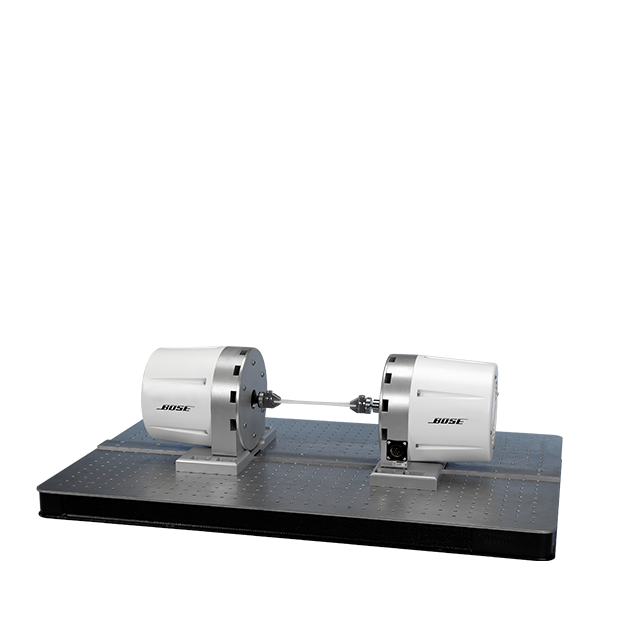

☰
HEART VALVE DURABILITY
Combining high-frequency performance and sample pressure control previously unachievable in heart valve durability testing!

Using proprietary ElectroForce controls and linear motor technology, the DuraPulse™ Heart Valve Test (HVT) instrument achieves smooth waveform fidelity and precise control for accelerated heart valve durability testing. Automatic PeakIQ™ control algorithms and independent test chambers ensure that established test conditions are maintained on each valve throughout the test. The DuraPulse HVT instrument provides testing to the ISO 5840 standard for heart valve durability assessment.